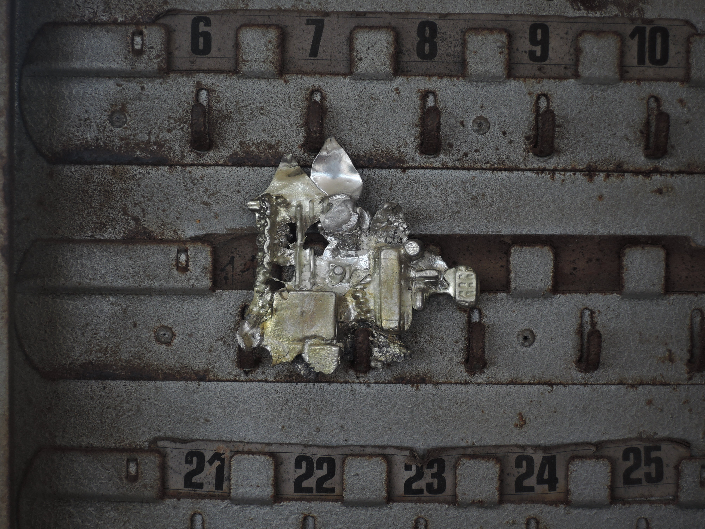
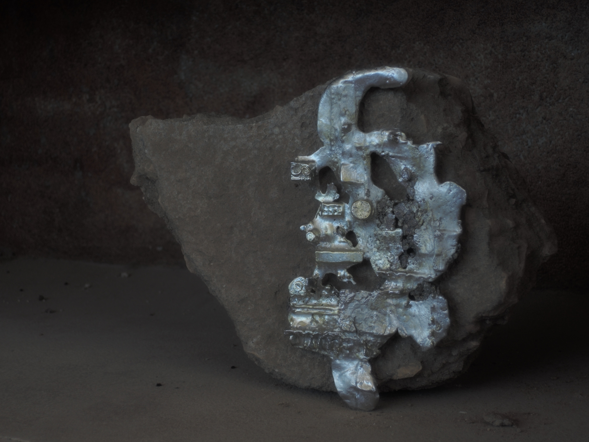
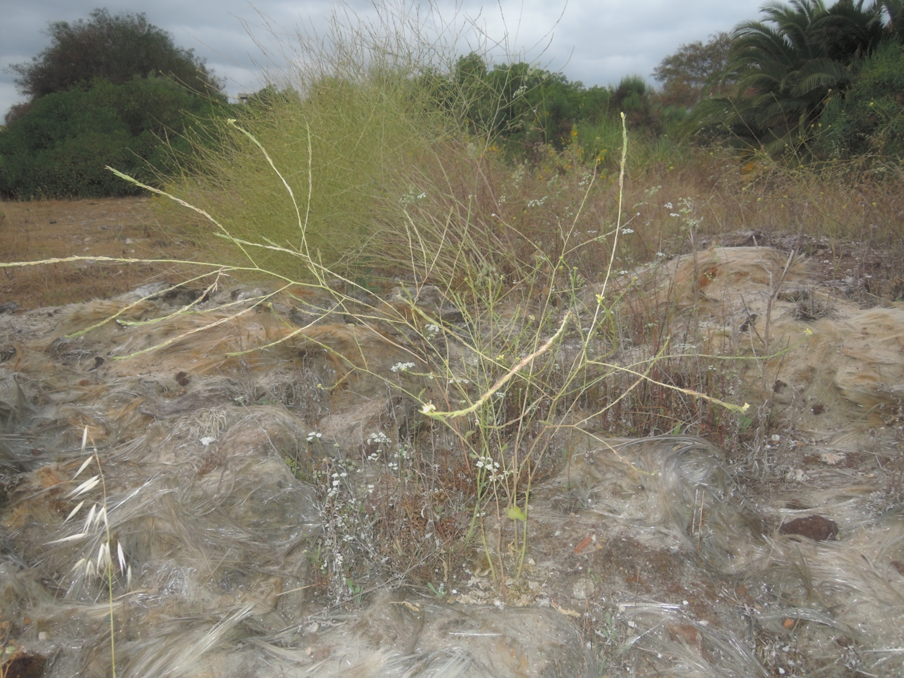
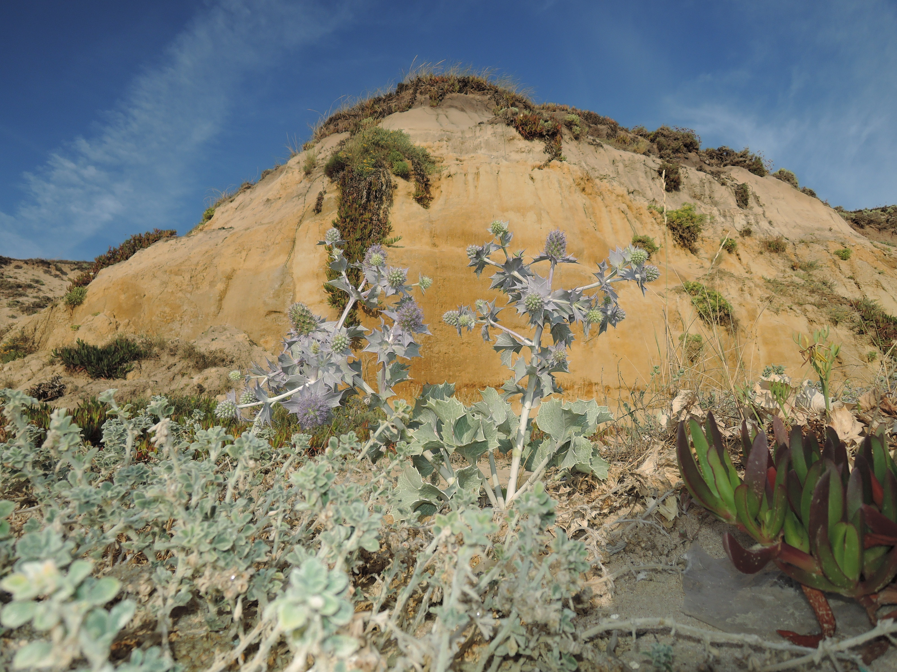
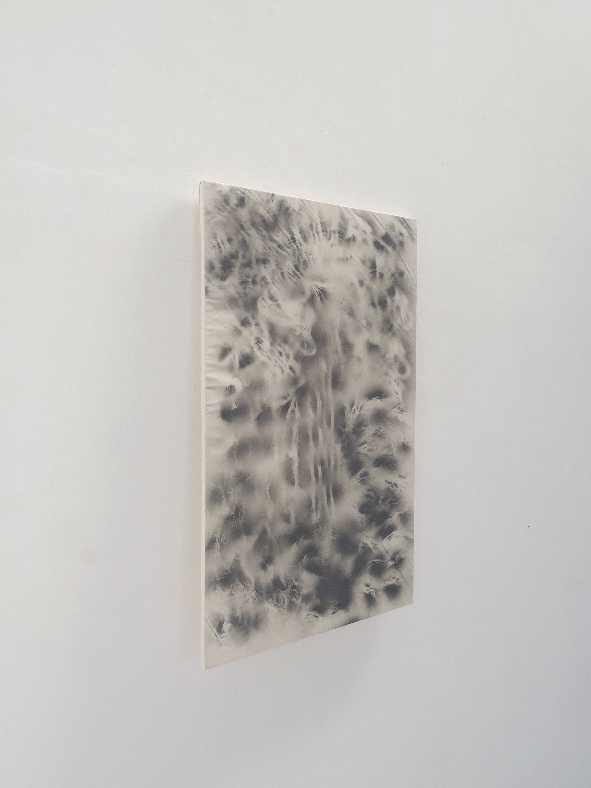
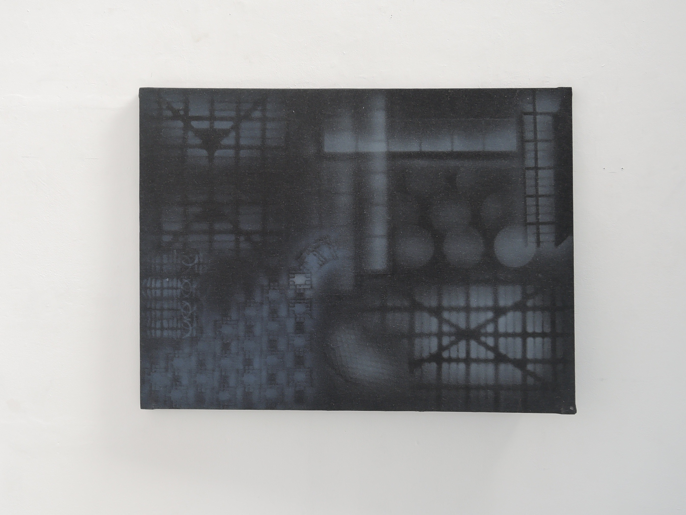

PADA Studio’s residency, curated by Catarina Real and Tania Geiroto Marcelino, Barreiro,
Portugal
Drive one – machine, refining and storing. Electricity sings. ‘Things break apart everyday anyhow –
especially high technology –
and end up as inert objects, dead media, discarded technology.’
Bursting spring chirping birds hovering above electrical cars. Fueling -




.. What was left was a pocket-sized device, with a system coated and coded.
The digital documentation of these past months will end up in The Netherlands.However, the objects being
documented were in a sense already ghosts,
but still with an ability to function if handled differently.
In our studio, lights, chargers and hot water are connected to power circuits. Noise coming from the
factories are made by these circuits as well. I wonder what happens to electronical physical waste, as
it has the ability to power up like a circuit.
When thinking about technology, it often comes to my mind that the technology I use and have used, will
eventually scatter and depart to either another person, storage space or waste center. When that
happens, the object is not in sight anymore. I have tried to create an exoskeleton for the waste, to
highlight its past potential.


Melted pewter sculptures combined with discarded electronic motherboards found in the industrial area of Barreiro. Size: ranging from 15 cm x 15 cm to 20 cm x 15 cm

Wooden structure, 40 cm x 40 cm x 15 cm

L 104 cm x W 60 cm

L 42 cm x W 29,7 cm

L 107 cm x W 79 cm